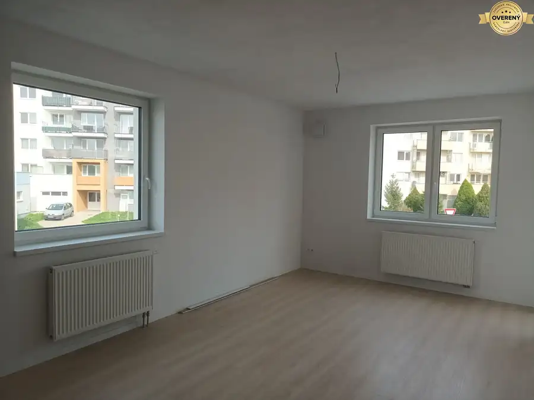
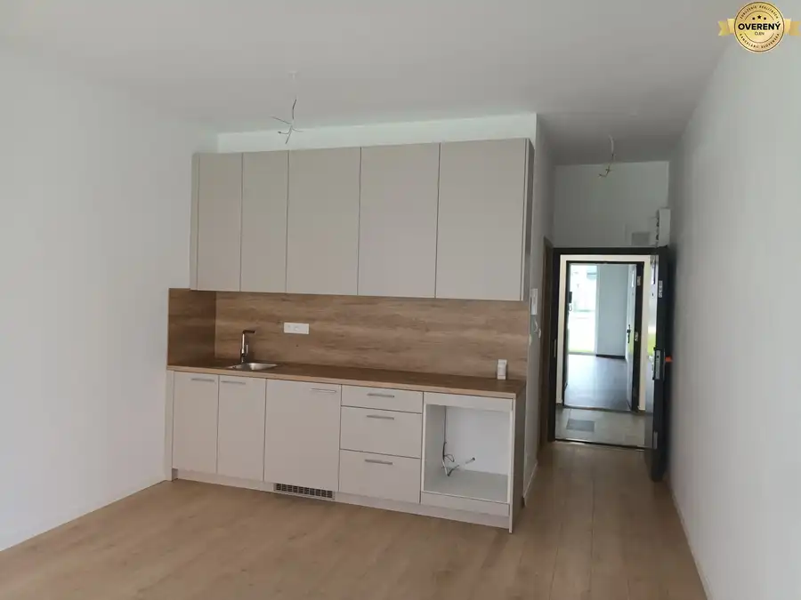

NOVOSTAVBA! 2i byt 42m2, štandard s linkou, balkón 3,65m2, 135.200€
Biely Kostol
- Dispozícia2-izbový
- Plocha42 m²
- Poschodie2. z 4
O nehnuteľnosti
Táto lokalita poskytuje, vďaka svojej polohe, široké možnosti trávenia voľného času. Výhodou je bezprostredná blízkosť Malých Karpát, rybníka tvoreného riekou Parná, rôznych športovísk a v okolí nechýbajú ani viaceré cyklotrasy. Samozrejmosťou je občianska vybavenosť, vrátane materskej školy, reštaurácií, obchodov či kúpaliska.
Bytový dom ponúka novým budúcim vlastníkom celkom 47 bytov, apartmánov a obchodných priestorov. Situovaný je v obci Biely Kostol v lokalite PARNAS. Bytový dom tvoria štyri podlažia, kde nájdeme ponuku jeden až trojizbových bytov, apartmánov a obchodných priestorov na prízemí bytového domu.
“Nachádzajú sa tu 1 až 3 izbové bytové jednotky s výmerami od 25 m2 do 51 m2, vrátane balkónov. Na jednom poschodí tak nájdeme 11 až 12 bytov. Vďaka tomu je zaručená príjemná, takmer rodinná atmosféra.” V
2 I BYT - VÝMERA 42M2 S balkónom 3,65M2, CELKOVÁ VÝMERA 45,65M2 / VÝBORNÁ CENA 135.200€
KU KAŽDEJ BYTOVEJ JEDNOTKE JE POTREBNÉ ZAKÚPIŤ MINIMÁLNE JEDNO PARKOVACIE STÁTIE V CENE 5.000,-€ S DPH.
Byty budú dokončené v prevedení Štandard – použité budú kvalitné materiály renomovaných značiek Kaldewei, HansGrohe, Idealstandard, Egger …
– Vaňa renomovanej značky Kaldewei
– Batérie / umývadlová a vaňová / značky Hansgrohe
– Umývadlo značky Ideal Standard
– Závesné WC s doskou SoftClose, AquaBlade značky Ideal Standard
Obklady, dlažby, podlahové krytiny
Gresové obklady a dlažby v kúpeľni
Mrazuvzdorná gresová protišmyková keramická dlažba na balkónoch
Laminátová podlaha v bytoch od renomovaného výrobcu Egger
Termín odovzdania bytového domu 03/2025.
Výhody lokality:
• v blízkosti Trnavy
• prímestská MHD
• spojenie prírody a bezprostredná blízkosť mesta
Lokalita v ktorej je bytový dom PARNAS situovaný vyzdvihuje spojenie krásnej prírody s výhľadom na chrbát Malých Karpát a bezprostredná blízkosť krajského mesta Trnava, vzdialeného iba 5 km. Spája v sebe množstvo zaujímavých alternatív trávenia voľnočasových aktivít, ako aj aktivít bežného života.
V prípade otázok alebo záujmu o obhliadku ma neváhajte kontaktovať Hašáková Judita .
CENA PREDMETNEJ NEHNUTEĽNOSTI ZAHŔŇA PROVÍZIU REALITNEJ KANCELÁRIE, PROFESIONÁLNE REALITNÉ A PRÁVNE PORADENSTVO, VRÁTANE VYPRACOVANIA KÚPNO-PREDAJNÝCH ZMLÚV A NÁVRHU NA VKLAD DO KATASTRA NEHNUTEĽNOSTÍ
Viac na: https://www.zoznamrealit.sk/maxxrealitysk-s-r-o/novostavba-2i-byt-standard-44m2-predzahradka-27m2-cena-
Parametre
| Celková rozloha | 45.65 m² |
|---|---|
| Úžitková plocha | 42 m² |
| Poschodie | 2 |
| Počet poschodí | 4 |
| Počet izieb | 2 |
| Odvoz odpadu | áno |
| Plyn | nie |
| Internet | optika |
| Kúpeľňa | vaňa |
| Vykurovanie | spoločné |
| Lódžia | áno |
| Výťah | áno |
| Parkovanie | vlastné vyhradené |
| Postavené z | tehla |
| Zariadenie | čiastočne |
| Zateplený objekt | áno |
| Káblová televízia | áno |
| Bezbariérový prístup | áno |
| Okná | plastové |
| Novostavba | áno |
| Dátum zverejnenia | 11. 12. 2024 |
Kde to je
Mohlo by Vás zaujímať
 Byt5
95 500 €SUPER CENA! 1i byt s predzáhradkou 18m2, štandard,. 43,55m2 - 95.500€
Biely Kostol
1-izbový25.55 m²1. podlažie
BIELY KOSTOL Táto lokalita poskytuje, vďaka svojej polohe, široké možnosti trávenia voľného času. Výhodou je bezprostredná blízkosť Malých Karpát,…
Byt5
95 500 €SUPER CENA! 1i byt s predzáhradkou 18m2, štandard,. 43,55m2 - 95.500€
Biely Kostol
1-izbový25.55 m²1. podlažie
BIELY KOSTOL Táto lokalita poskytuje, vďaka svojej polohe, široké možnosti trávenia voľného času. Výhodou je bezprostredná blízkosť Malých Karpát,…

Byt10 157 000 €NOVOSTAVBA BIELY KOSTOL! 3i byt, s balkónom, super cena 157.000€ Biely Kostol 3-izbový54.74 m²2. podlažie Táto lokalita poskytuje, vďaka svojej polohe, široké možnosti trávenia voľného času. Výhodou je bezprostredná blízkosť Malých Karpát, rybníka…
Byt8 148 000 €VYMEŇ STARÝ BYT ZA NOVÝ výborná cena 2i byt s balkónom, 148.000€ Biely Kostol 2-izbový50.92 m²2. podlažie Táto lokalita poskytuje, vďaka svojej polohe, široké možnosti trávenia voľného času. Výhodou je bezprostredná blízkosť Malých Karpát, rybníka…